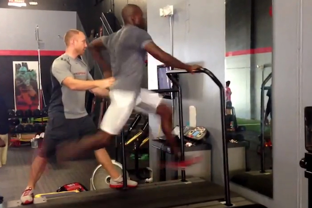
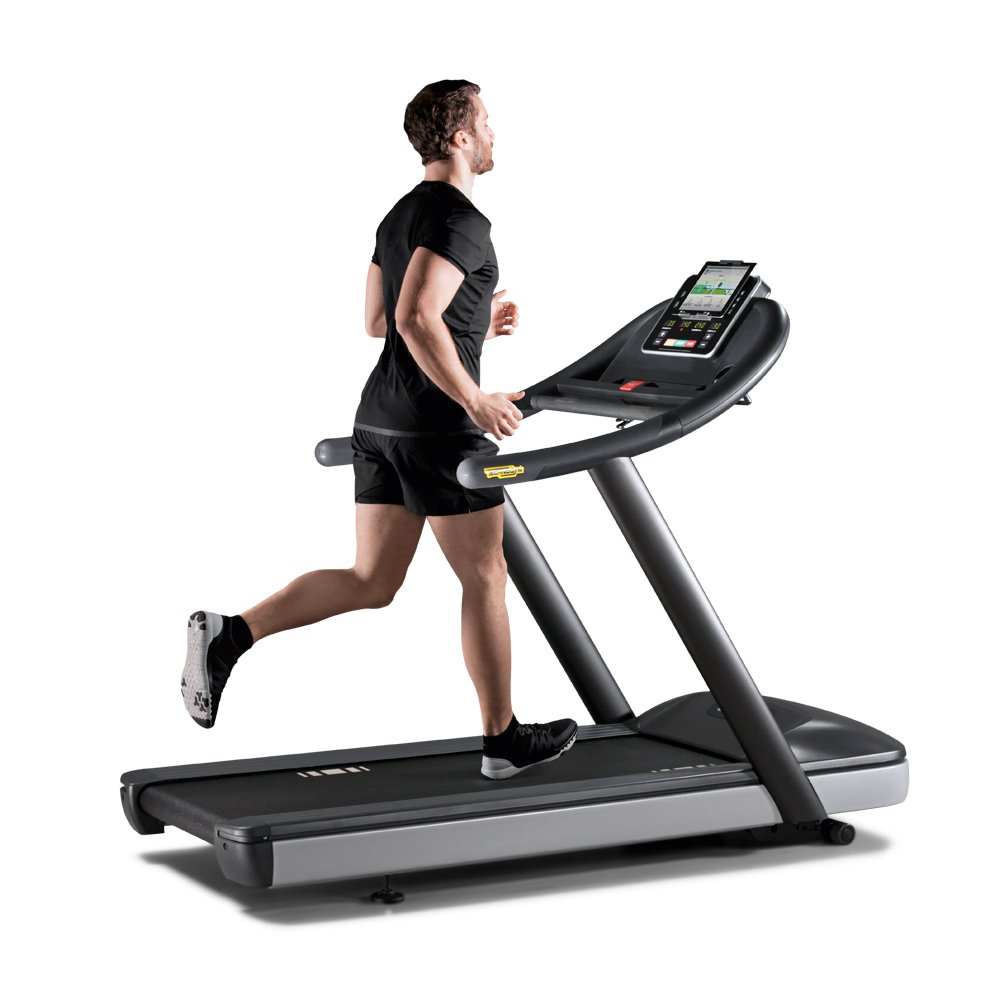

Treadmill

Fat Loss
5 minute warm up period: walk at a normal pace
Fat Loss Interval: Perform between 10 and 20 times for a workout
- Fast walk period: 2 minutes of fast walking
- Sprinting period: 1 minute of sprinting
Fat Loss Interval x 10 = 35 minutes
Fat Loss Interval x 20 = 65 minutes

Conditioning
10 minute warm up period: walk at a normal pace
Conditioning Interval: Perform between 15 and 25 times for a workout
- Fast walk period: 2 minutes of fast walking
- Sprinting period: 1 minute of running
Conditioning Interval x 15 = 47.5 minutes
Conditioning Interval x 25 = 72.5 minutes